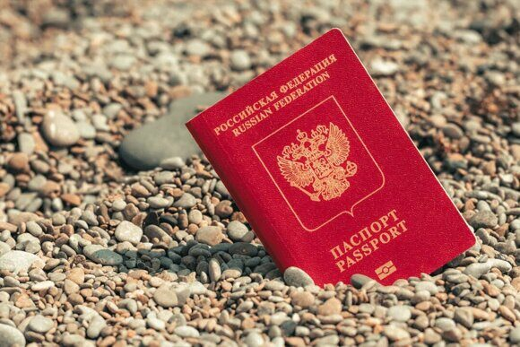

« НазадИнструкция по восстановлению заграничного паспорта: советы и рекомендацииПотеря заграничного паспорта — это неприятная ситуация, которая может произойти с каждым. Расскажем в этой статье что делать в случае утери загранпаспорта в двух случаях: если вы потеряли его в России и если вы потеряли его будучи в поездке за рубежом. Что делать, если вы потеряли загранпаспорт в России: пошаговая инструкцияЕсли вы потеряли свой заграничный паспорт в РФ, не стоит паниковать. Восстановление документа возможно, но правильнее сказать, что это будет оформление нового документа, так как законом именно “восстановление” не предусмотрено. В этой статье мы подробно расскажем, как действовать в ситуации, когда перед очередной поездкой за рубеж, вы обнаружили, что потеряли свой загранник. Шаг 1: Убедитесь, что загранпаспорт действительно потерянПрежде всего, важно тщательно обдумать, где вы могли оставить свой паспорт. Начните с проверки всех карманов одежды, которую вы носили в последнее время, включая куртки, брюки и даже верхнюю одежду. Не забудьте заглянуть в сумки, рюкзаки и чемоданы, особенно если вы недавно возвращались из поездки. Загляните в места, где вы могли временно оставить паспорт, например, на столе, в ящике, или в автомобиле. Если вы все еще не можете найти документ и уверены, что он действительно потерян, стоит обратить внимание на дополнительные меры предосторожности. Например, подумайте, когда вы в последний раз использовали паспорт — возможно, это поможет вспомнить, где он мог остаться. Если вы уверены, что документ потерян, переходите к следующему шагу. Шаг 2: Подготовьте необходимые документы для восстановления заграничного паспортаВосстановление заграничного паспорта — процесс, требующий внимательной подготовки документов. Чтобы избежать задержек и лишних хлопот, важно заранее собрать все необходимые бумаги. Вот список документов, которые вам понадобятся:
Кроме перечисленных документов, может потребоваться и дополнительная информация, в зависимости от вашей ситуации. Например, если вы меняли фамилию, вам понадобятся документы, подтверждающие это изменение (Свидетельство ЗАГС о браке, или о перемене имени). Также стоит учитывать, что в некоторых случаях могут потребоваться дополнительные документы, такие как справка формы №9 о месте жительства. Не забывайте, что процесс восстановления паспорта может занять некоторое время, поэтому лучше начинать его заранее, особенно если у вас намечаются поездки за границу. Ознакомьтесь с актуальными сроками и требованиями на сайте МВД, чтобы быть в курсе всех изменений. Шаг 3: Обратитесь в отделение УВМ МВД или МФЦПосле подготовки всех необходимых документов вам нужно обратиться в отделение УВМ МВД по месту жительства или в многофункциональный центр (МФЦ). При подаче документов:
Шаг 4: ОжиданиеПосле подачи документов вам останется только ждать. Сроки оформления заграничного паспорта могут варьироваться:
Вы можете отслеживать статус вашего заявления через сайт МВД или обратившись в паспортный стол. Срок оформления зависит от места подачи документов. При подаче по постоянной регистрации загранпаспорт будет готов не позже, чем через 1 месяц. Шаг 5: Получение нового паспортаКогда ваш новый заграничный паспорт будет готов, вам придет уведомление. Не забудьте взять с собой:
Проверьте все данные в новом паспорте на предмет ошибок. Дополнительные рекомендации
Часто задаваемые вопросы по ситуации утери загранпаспорта на территории РФ
В отделение УВМ МВД, или МФЦ. Также, при потере загранпаспорта – можно обратиться в ближайшее отделение полиции. Вам необходимо будет написать заявление об утере. Полиция выдаст вам талон-уведомление о приеме заявления – это документ, подтверждающий вашу обращение. Но вы сможете и без него начать процедуру восстановления загранпаспорта. Достаточно в анкете при оформлении нового загранпаспорта поставить галочку в окошке «взамен утраченного»
Для оформления нового заграничного паспорта необходимо предоставить сведения об предыдущем действующем загранпаспорте, который утерян. Это может быть:
Стоимость госпошлины зависит от типа паспорта (обычный или биометрический) и не зависит от способа подачи заявления (через Госуслуги или лично). Информация о размерах госпошлин размещена на сайте Госуслуг и на сайте МВД.
Сроки зависят от места подачи и загруженности подразделения УВМ МВД. Обычно оформление занимает от 1 до 3 месяцев.
Да, без загранпаспорта выехать за пределы России возможно. Это страны Таможенного союза: Белоруссия, Армения, Казахстан, Кыргызстан. А также в Абхазию и Южную Осетию выехать за границу возможно по внутреннему паспорту РФ.
Действия аналогичны потере паспорта. Однако не советуем обращаться в полицию с заявлением о краже, так как будет заведено уголовное дело и пока его не закроют, вы не сможете оформить новый заграничный паспорт. Поэтому, в анкете при оформлении нового загранпаспорта необходимо указать «взамен утраченного».
Нет, утерянный или украденный загранпаспорт аннулируется, и восстановить его невозможно. Необходимо оформить новый паспорт. Что делать, если вы потеряли загранпаспорт за границей: пошаговая инструкцияПотеря заграничного паспорта за границей — это стрессовая ситуация, которая может вызвать панику. Однако важно помнить, что существуют четкие шаги, которые помогут вам восстановить паспорт и продолжить ваше путешествие. Вот подробная инструкция о том, что делать в таком случае. Шаг 1: Успокойтесь и оцените ситуациюПервое, что нужно сделать, — это взять себя в руки. Постарайтесь вспомнить, где вы могли потерять паспорт. Проверьте все карманы, сумки и места, где вы могли его оставить. Если вы уверены, что паспорт потерян, переходите к следующему шагу. Шаг 2: Сообщите о потере
Шаг 3: Свяжитесь с консульством или посольством
Шаг 4: Подготовьте необходимые документыДля восстановления паспорта вам понадобятся следующие документы:
Шаг 5: Посетите консульствоНа приеме в консульстве:
Шаг 6: Получите новый паспорт, или Свидетельство на возвращениеПосле обработки вашего запроса вам выдадут новый загранпаспорт (срок от 3-х до 6-ти месяцев) или Свидетельство на возвращение (срок примерно 1 неделя), которое позволит вам вернуться на родину. Убедитесь, что все данные в документе верны. Шаг 7: Вернитесь на родинуСо Свидетельством на возвращение вы сможете вернуться домой. По прибытии в Россию вам нужно будет обратиться в отделение МФЦ, или УВМ МВД для получения нового заграничного паспорта. Шаг 8: Обратитесь в страховую компанию (если применимо)Если у вас есть туристическая страховка, свяжитесь с вашей страховой компанией. Некоторые полисы покрывают расходы на восстановление документов и могут помочь вам с этой процедурой. Потеря заграничного паспорта за границей — это неприятная ситуация, но следуя этим шагам, вы сможете быстро восстановить свои документы и продолжить путешествие. Главное — не паниковать и действовать последовательно. Удачи в ваших путешествиях! Часто задаваемые вопросы в случае, если загранпаспорт был утерян в зарубежной поездке
Первое и самое важное – сохранять спокойствие. Немедленно сообщите о пропаже в ближайшее консульство или посольство России в стране вашего пребывания. Запишите контактные данные консульства/посольства. Заблокируйте банковские карты и уведомите свой банк о ситуации. Сделайте копии всех важных документов (билеты, страховой полис, водительские права, если есть), если у вас остались их оригиналы. Если возможно, сделайте фотографии или бумажные копии утерянных документов (если они были на электронных носителях).
Необходимо обратиться в ближайшее российское Консульство или Посольство в стране, где вы находитесь. Их контактную информацию можно найти на сайте Министерства иностранных дел России (mid.ru). В экстренных случаях можно обратиться в горячую линию МИД России.
Консульство/посольство предоставит вам подробный список необходимых документов. Обычно это включает заявление на получение нового паспорта, фотографии, копии утерянных документов (если есть), документы, подтверждающие вашу личность (например, внутренний паспорт РФ, водительские права, свидетельство о рождении), билеты, подтверждающие ваше пребывание за границей, и возможно, другие документы, в зависимости от конкретной ситуации.
Время изготовления нового паспорта варьируется в зависимости от страны, консульства/посольства и наличия необходимых документов. Обычно это занимает от трех месяцев до полугода. Поэтому лучше оформить за неделю Свидетельство на возвращение. Конкретные сроки вам сообщат в консульстве/посольстве.
Стоимость изготовления нового паспорта за границей обычно выше, чем в России. Точная цена зависит от страны и типа паспорта (на 5, или 10 лет). Информация о стоимости находится на сайте МИД РФ. На сегодня она составляет 35$ /90$ за загранпаспорт на 5/10 лет.
Нет, без загранпаспорта или другого действительного документа, удостоверяющего личность, выехать из страны, невозможно. Консульство/посольство может выдать вам Свидетельство на возвращение - удостоверение личности гражданина РФ, которое позволит вам вернуться в Россию.
Если у вас нет денег на проживание и оформление документов, сообщите об этом сотрудникам консульства/посольства. Они могут оказать вам помощь в решении финансовых проблем, в том числе в связи с возвращением на родину. В некоторых случаях возможна помощь от государства или благотворительных организаций.
В случае кражи паспорта необходимо дополнительно обратиться в местную полицию и получить справку о краже. Эта справка будет необходима для оформления нового паспорта в консульстве/посольстве.
Это сложная ситуация, но не безнадежная. Свяжитесь с консульством/посольством как можно скорее. Они помогут вам собрать необходимые документы для подтверждения вашей личности и возвращения домой, возможно, с помощью родственников или друзей. Готовьтесь к более длительной процедуре восстановления документов.
Нет, на данный момент невозможно оформление срочного загранпаспорта даже за дополнительную плату. Подробности уточняйте в консульстве/посольстве. Важно: Информацию о точных процедурах и необходимых документах следует уточнять непосредственно в консульстве или посольстве России в стране вашего пребывания. Не стесняйтесь обращаться за помощью к консульским работникам – они окажут вам все необходимое содействие. Потеряли загранпаспорт? Паспортно-визовый центр "Север" готов прийти на помощьПаспортно-визовый центр "Север" — надежный партнер в вопросах восстановления утерянных документов, и за более чем 20 лет работы в сфере оформления документов мы накопили огромный опыт и знания, которые помогут вам в данной ситуации. Что мы предлагаем?
Почему выбирают именно нас?
Не откладывайте решение проблемы с утерянным заграничным паспортом на потом. Позвоните нам прямо сейчас по телефону +79255854195 или оставьте заявку на нашем сайте. Мы готовы помочь вам в любое время и сделать процесс восстановления максимально простым и комфортным. Вы заслуживаете лучшего, и мы сделаем все возможное, чтобы вы остались довольны нашими услугами! Помимо оформления заграничного паспорта, мы также предоставляем услуги по оформлению виз, что может быть полезно, если вы планируете поездку за границу. Наши специалисты помогут вам разобраться в требованиях для получения визы в разные страны, а также подготовят все необходимые документы. Мы знаем, как важны поездки для каждого человека, и готовы сделать все, чтобы ваши путешествия были комфортными и беззаботными. Обращаясь в паспортно-визовый центр "Север", вы выбираете надежного партнера, который позаботится о ваших интересах и сделает все возможное, чтобы восстановление паспорта прошло быстро и без лишних хлопот. |
Комментарии
Комментариев пока нет